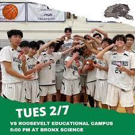
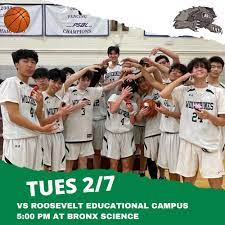
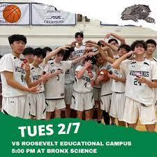
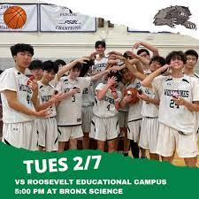

One of my more major extracurricular is basketball. For the last two years of highschool I've been on the school's basketball team and have been of the captain of the team aswell. Being on the team taught me a lot on what it means to be a leader that's able to keep other's motivated and at 100% at all times. I cherish my expirence as a captain.
Being apart of my school team really helped me develop leadership and corroborating skills. The feeliing of fighting for something greater than yourself really gives you a sense of having a higher purpose. The togetherness we had as a team is something that can only be defined as family.
Check out their insta